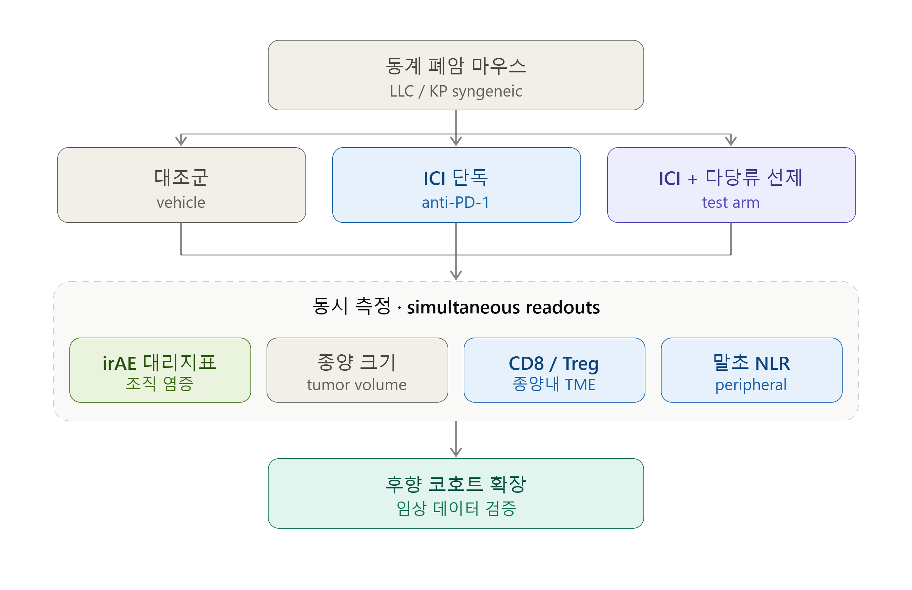

한약 다당류의 irAE 선제 완충 가설
폐암(NSCLC) × PD-1/PD-L1 면역항암제(ICI) 병용
최우선 목표는 폐암 ICI의 효능을 끌어올리고 유지하는 것 — 반응률은 아직 15–20% [#119]
그런데 효과가 나면 irAE 발생 → 스테로이드로 면역 재억제 → 효능 급감 [#05·98]
한약 연구도 ‘효능 강화’에 집중 — 정작 효능을 깎는 irAE 선제 차단은 공백
그래서 irAE 완충 = 효능 유지의 수단. 고리를 끊어 같은 약으로 더 오래·강하게
폐암 ICI 중 한약 다당류를 선제 병용하면,
전신 irAE는 완충하면서 종양내 CD8·말초 NLR은 유지되어 스테로이드 없이 ICI를 지속하게 한다.
효능 강화 우선 — 부작용 감소보다 ‘치료 효율’이 최종 가치
한약–양약(ICI) 연관성이 분명할 것
논문 근거 기반 — 출처·PMID 추적 가능한 것만
다당류(APS·PSP) 선제 병용 → 전신 irAE(폐렴·대장염·피부염) 완화 + 종양내 CD8·말초 NLR 유지 → 스테로이드 없이 ICI 지속률 ↑
G1 · G3 결합 [#30·118·136·137 + #05·98]
직접 근거는 아직 얇음 — 폐암 특이 근거는 증례 1건(#98)·리뷰(#29)뿐 → 결론이 아닌 검증 가능한 가설
동계 폐암 마우스 ICI ± 다당류 선제투여 → irAE 대리지표 vs 종양·CD8/Treg·NLR 동시 측정 → 후향 코호트

말초 NLR(및 Treg/effector 비) 궤적이 다당류 병용 시 irAE와 ICI 반응을 동시 예측할 것이다
G4 · 바이오마커 부재 [#05·52·119] · ‘호중구/림프구 비 유지’를 그대로 지표화 → 가설 1을 가장 싸게 실증하는 핸들
기존 혈액검사만으로 검증 — 후향 코호트 NLR 궤적 vs irAE 등급·반응률 상관 · ROC
다당류 Treg 조절은 용량·조직 의존 → 저용량서 자가반응 T세포만 억제, 종양내 T세포 보존 = ‘치료 창’ 존재
G5 중심 · Treg 역설 정면돌파 [#02·19 + #136·137]
다당류 면역 ‘활성화’↔‘완화’ 방향성 상충(G7)도 용량·맥락 의존으로 설명 가능
용량구배 × 조직(비장·종양·장) Treg/CD8 매핑 → irAE·항종양 분리 창 탐색